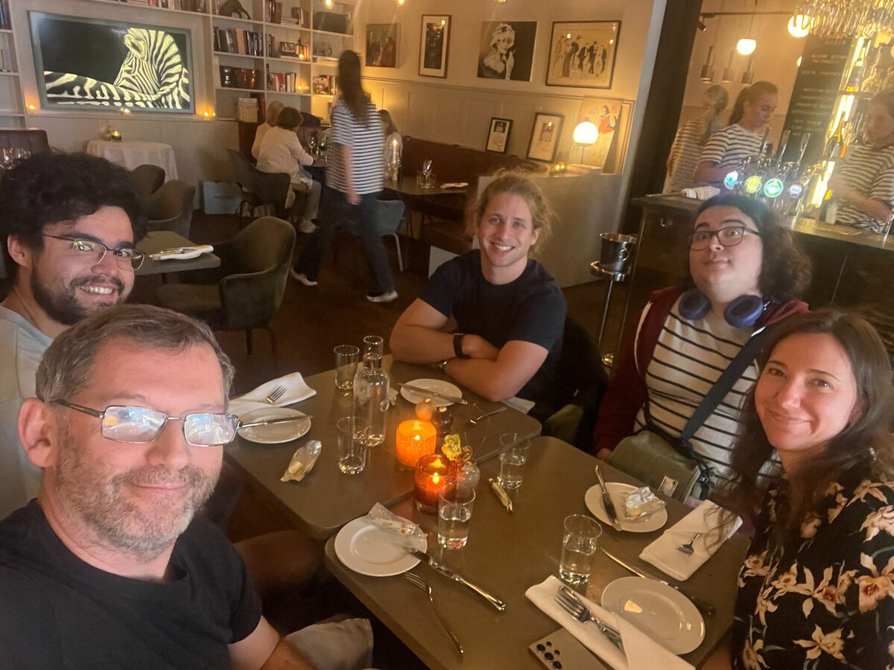

My Collaborators

One of the most rewarding aspects of my work as a mathematician is collaborating with wonderful people from around the world. The parenthetical description next to each name gives a broad indication of the area or context of our joint work.
The current list contains 235 collaborators. A substantial number first became my co-authors while they were undergraduate or high school students, reflecting my long-standing interest in involving young mathematicians in genuine research.
Color key
Collaborators shown in blue are co-authors on five or more papers. Collaborators shown in red are co-authors on ten or more papers.
Collaborators shown in blue are co-authors on five or more papers. Collaborators shown in red are co-authors on ten or more papers.
A
(9)
Esen Aksoy (combinatorics) Lecturer, Purdue University
Karam Aldahleh (undergrad) University of Rochester
J.S. Aldridge (medical physics) University of Wisconsin-Madison
Yuval Amit (SMALL2026 REU) University of Maryland
George Arutyunyants (analysis) Head of Analytics, Parker Avery
Ruben Ascoli (undergrad) Princeton University
Charlotte Aten (number theory) University of Rochester
Kellen Atkins (analysis) University of Rochester
B. Ayachi (undergrad) University of Rochester
B (13)
Emily Bau (undergrad) University of Rochester
Mike Bennett (number theory) former Ph.D. Student at the University of Rochester
Andrew Best (ergodic theory) former Ph.D. student at Ohio State University
Vitaly Bergelson (ergodic theory) Ohio State University
Oscar Bernfield (high school student) Harley School
Livia Betti (undergrad) University of Rochester
Pablo Bhowmik (combinatorics) Postdoctoral researcher, Ben-Gurion University, Israel
Philipp Birklbauer (combinatorics/number theory) Google
Tainara Borges (analysis) Brown University
Ivan Bortnovskiy (undergrad) SMALL REU
Luca Brandolini (analysis) University of Bergamo, Italy
Paige Bright (undergrad) MIT
Will Burstein (analysis, data science) University of Rochester
C
(11)
Alan Chang (analysis) Washington University in St LouisJeremy Chapman (number theory) Lyon College
Nik Chatzikonstantinou (analysis) University of Rochester
Timothy Cheek (undergrad) SMALL REU
Justin Cheigh (undergrad) Williams College
Lucas Chen (SMALL2026 REU) University of Chicago
Ivan Chio (probability) Bank of America
Javier Cilleruelo (number theory) University of Madrid (deceased)
Leonardo Colzani (analysis) University of Milan, Italy
Joseph Cooper (undergrad) SMALL REU
David Covert (number theory) Associate Teaching Professor and Director of Undergraduate Mathematics, University of Missouri–St. Louis
D
(5)
Matthew Dannenberg (probability) University of Rochester
Laura DeCarli (analysis) Florida International University
Shantanu Deodhar (analysis) University of Rochester
Xiumin Du (analysis) Northwestern University
June Duvivier (undergrad) SMALL REU
E
(2)
Burak Erdogan (analysis) University of Illinois Suresh Eswarathasan (analysis) University of Cardiff, Wales
F
(6)
Xinyu Fang (undergrad) Harvard E.E. Fitchard (medical physics) University of Wisconsin-Madison
Davey Fitzpatrick (undergrad), Princeton University
J. Fleischman (undergrad), University of Rochester
Ben Foster (analysis) Washington University in St. Louis
Jonathan Fraser (analysis) St Andrews University
G
(13)
Ayla Gafni (number theory) University of Mississippi Julia Garibaldi (combinatorics) Georgia Institute of Technology
Gio Garza (undergrad) University of Rochester
Dan Geba (analysis) University of Rochester
Giaccomo Gigante (analysis) University of Bergamo, Italy
Pico Gilman (undergrad) SMALL REU
Steve Gonek (number theory) University of Rochester
Loukas Grafakos (analysis) University of Missouri
Allan Greenleaf (analysis) University of Rochester
Shaoming Guo (analysis) University of Wisconsin
Vishal Gupta (combinatorics) University of Rochester
Karina Gurevich (undergrad) University of Rochester
Larry Guth (analysis, geometry and combinatorics) Massachusetts Institute of Technology
H
(13)
Doug Haessig (number theory) University of RochesterWilliam Hagerstrom (undergrad) University of Rochester
Tigran Hakobyan (University of Yerevan)
Kyle Hambrook (analysis) University of Rochester
Derrick Hart (number theory and analysis) Software engineer in the Kansas City area
Gabe Hart (undergrad) University of Rochester
Norbert Hegyvary (analysis) Eötvös Loránd University
Barrett Heritage (undergrad) Williams College
Ludo Hirst (combinatorics) Master's student, University of Bristol
Steve Hofmann (analysis) University of Missouri
Chirstopher Householder (SMALL2026 REU) Missouri State University
Vahag Hovhannisyan (analysis) University of Yerevan
Le Quang Hung (combinatorics) Vietnam National University
I
(3)
Joshua Im (SMALL2026 REU) Texas A&M University Joshua Iosevich (undergrad) Rochester Institute of Technology
F. Iulianelli (undergrad) University of Rochester
J
(7)
Kareem Jaber (undergrad) SMALL REU Jonathan Jaimangal (undergrad) CUNY
Philippe Jaming (analysis) University of Orléans, France
Gail Jardine (analysis) University of Rochester
Ryan Jeong (undergrad) University of Pennsylvania
Tingsong Jiang (combinatorics) University of Rochester
Hadi Jorati (analysis and combinatorics) University of British Columbia, Vancouver
K
(14)
Boris Kashin (analysis) Moscow State University Nets Katz (analysis and combinatorics) Caltech
Zar Keyshams (analysis) University of Yerevan
Alhussein Khalil (undergrad) University of Rochester
Kimberly Kinateder (probability) Wright State University
Julian King (undergrad) SUNY Geneseo
Scott Kirila (number theory) University of Rochester
Stephen Kleene (geometry) University of Rochester
Doowon Koh (analysis and number theory) Full Professor of Mathematics, Chungbuk National University, Korea
Mihalis Kolountzakis (analysis, number theory and combinatorics) University of Crete
Sergei Konyagin (combinatorics) Moscow State University
Ben Krause (analysis) University of British Columbia, Vancouver
Neeraja Kulkarni (analysis) University of Rochester
Sey-Yeon Kwon (undergrad) SMALL REU
L
(25)
Izabella Laba (analysis and combinatorics) University of
British Columbia, VancouverChun-Kit Lai (analysis) San Francisco State University
Bartosz Langowski (analysis) Franciscan University
Loredana Lanzani (analysis) Syracuse University
Meiling Laurence (undergrad) SMALL REU
Tran Duy Anh Le (undergrad) University of Rochester
Sujin Lee (combinatorics) Chungbuk University
Mark Lewko (analysis) Promontory Financial Group, IBM
Isaac Li (undergrad) University of Rochester
Zane Li (analysis) North Carolina State University
Zhangze Li (analysis) Ohio State University
Zhihe Li (analysis, probability) University of Rochester
Irina Limonova (analysis) Moscow State University
Bochen Liu (analysis) Associate Professor of Mathematics, Southern University of Science and Technology (SUSTech)
Haoran Liu (undergrad) University of Rochester
Xuyan Liu (undergrad) University of Michigan
Elijah Liflyand (analysis) Bar-Ilan University
Allen Liu (analysis, number theory) MIT
Adam Lott (number theory) UCLA
Guozhen Lu (analysis) Wayne State University
Michael Lucas (undergrad) SMALL REU
Franz Luef (analysis) Norwegian University of Science and Technology
Ben Lund (combinatorics) Rutgers University
Yuri Lyubarskii (analysis) Norwegian University of Science and Techology
Spencer Lyudovik (undergrad) University of Rochester
M
(23)
T.R. Mackie (medical physics) University of
Wisconsin-Madison Akos Magyar (analysis, combinatorics, number theory)
Ian MacKinnon (undergrad) University of Rochester
Shir Maimon (undergrad) University of Rochester
M. Martino (undergrad) University of Rochester
Mate Matolcsi (analysis) Rényi Institute, Budapest, Hungary
Pertti Mattila (analysis) University of Helsinki
Azita Mayeli (analysis) CUNY
Brian McDonald (combinatorics) University of Rochester
Alex McDonald (analysis) Assistant Professor of Mathematics, Kennesaw State University
Andrea Merlo (analysis) Universidad del País Vasco
Wyatt Milgram (undergrad) Vassar College
Steven Miller (number theory) Williams College
Mariusz Mirek (analysis) Rutgers
Josh Morales (number theory) University of Rochester
Sevak Mkrtchyan (probability) University of Rochester
Judy Miller (analysis) Georgetown University
Natalia Mora Cuellar (analysis) UBC
Hannah Morgan (combinatorics) Instructional faculty in Computer Science, University of Chicago
Mihalis Mourgoglou (analysis and combinatorics) CRM Barcelona
Hamed Mousavi (discrete harmonic analysis) University of Bristol
Sid Mulherkar (analysis) UCLA
Brendan Murphy (number theory and combinatorics) Research Software Engineer, School of Chemistry, University of Bristol
N
(5)
Arian Nadjimzadah (analysis) UCLAS. Nan (undergrad) University of Rochester
Alex Nappo (undergrad) Villanova University
Hari Nathan (analysis, data science) University of Rochester
Kelvin Nguyen (undergrad) University of Rochester
O
(2)
G.H. Olivera (medical physics) University of
Wisconsin-MadisonYumeng Ou (analysis) City University of New York
P
(15)
Svetlana Pack (analysis, logic, machine learning) Penn
State University Tiancheng Pan (undergrad) SMALL REU
Jonathan Pakianathan (analysis, number theory and combinatorics) University of Rochester
Eyvindur Palsson (analysis and combinatorics) Virginia Tech
Chamsol Park (analysis and geometry) University of Rochester
Hans Parshall (analysis and combinatorics) Western Washington University
Jonathan Passant (combinatorics) Industry
Steen Pedersen (analysis and combinatorics) Wright State University
Yorgis Petridis (combinatorics) University of Georgia
Quy Pham (analysis) University of Rochester
Thang Pham (combinatorics) University of Hanoi
Jill Pipher (analysis) Brown University
Anatoly Podkorytov (analysis and number theory) Steklov Institute, St. Petersburg, Russia
Devayani Pradhan (SMALL2026 REU) University of Michigan
Malabika Pramanik (analysis) University of British Columbia
R
(10)
Firdavs Rakhmonov (analysis and combinatorics) St.
Andrews University, ScotlandP.J. Reckwerdt (medical physics) University of Wisconsin-Madison
Alex Rice (number theory) University of Rochester
Sinai Robins, (number theory, combinatorics) Brown University
Oliver Roche-Newton (combinatorics) University of Bristol
Carlos Rojas (geometry) University of Rochester
I. Rojas Aravena (analysis) UBC
Francisco Romero (undergrad) University of Vermont
Svetlana Roudenko (analysis) George Washington University
Misha Rudnev (analysis and combinatorics) University of Bristol
S
(21)
Helge Jørgen
Samuelsen (analysis)
Norwegian Institute of Science and TechnologyAkshay Sant (number theory) University of Rochester
Eric Sawyer (analysis) McMaster University
Andreas Seeger (analysis) University of Wisconsin-Madison
Steven Senger (analysis and combinatorics) Full Professor of Mathematics, Missouri State University
Nathaniel Shaffer (undergrad) University of Rochester
Vismay Sharan (undergrad) SMALL REU
Adeeb Sheikh (undergrad) University of Rochester
Chun-Yen Shen (combinatorics) University of Taipei
Zhelin Sheng (undergrad) University of Rochester
Igor Shparlinski (combinatorics and number theory) University of New South Wales
Jenna Shuffelton (undergrad) SMALL REU
Nathan Skerrett (geometry) University of Rochester
Jozsef Solymosi (combinatorics) University of British Columbia, Vancouver
Ben Song (graph theory) Pittsford High School, Rochester, NY
Sean Sovine (analysis) Virginia Tech
Jennifer Smucker (undergrad) SMALL REU
Lily Stolberg (undergrad) University of Rochester
Maxwell Sun (undergrad) MIT
Ville Suomala (analysis) University of Oulu
Thomas Szarek (analysis) University of Georgia
T
(11)
Michael Tait (combinatorics) Villanova C. Taliancic (undergrad) University of Rochester
Terry Tao (analysis and combinatorics) UCLA
Krystal Taylor (analysis and number theory) Associate Professor of Mathematics, Ohio State University
Vladimir Ten (combinatorics) University of Bristol
June Terzioglu (undergrad) University of Rochester
A. Thomas (undergrad) University of Rochester
Haoyuan Tian (data science) University of Rochester
Marie-Helene Tome (undergrad) SMALL REU
Giancarlo Travaglini (analysis and number theory) University of Milan
Tim Tribone (undergrad) University of Rochester
U (1)
Ignacio Uriarte-Tuero (analysis and combinatorics) Michigan State University
V
(5)
Armen Vagharshakyan (analysis) Yerevan State University
Luke Vaicunas (undergrad) University of Rochester
Santiago Velazquez (undergrad) University of Pennsylvania
Le Anh Vinh (combinatorics) Vietnam National University)
Iana Vransko (undergrad) SMALL REU
W
(6)
Hong Wang (analysis) Massachusetts Institute of
Technology Daniel Weidinger (analysis and number theory) University of Missouri
Jean Weill (physics) Northwestern University
Charles Wolf (combinatorics) University of Rochester
Nathan Whybra (undergrad) University of Rochester
Emmett Wyman (mathematics) Northwestern University
X
(3)
Yakun Xi (analysis) Zhejiang University Maosheng Xiong (number theory and combinatorics) Hong Kong University of Science and Technology
Boqing Xue (analysis) Shanghai Tech University
Y
(4)
Alexia Yavicoli (fractal
geometry) University of British ColumbiaU. Yildirim (undergrad) University of Rochester
C. Yu (undergrad) University of Rochester
Ella Yu (combinatorics) University of Rochester
Z
(7)
Yujia Zhai (analysis) Harbin Institute of TechnologyMingyu Zhang (undergrad) University of Rochester
Ruixiang Zhang (analysis) UC Berkeley
K. Zhao (undergrad) University of Rochester
S. Zheng (undergrad) University of Rochester
Showmee Zhou (undergrad) University of Rochester
Pavel Zorin-Kranich (analysis) industry